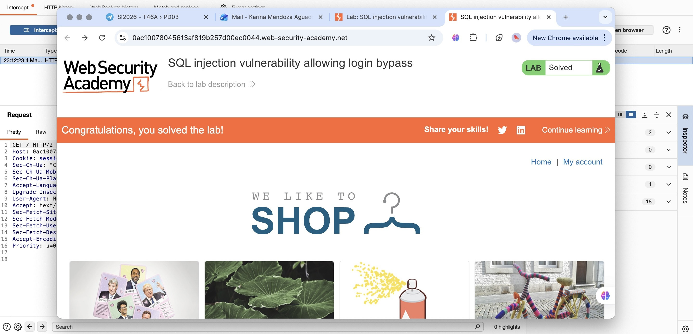

SQL injection vulnerability allowing login bypass.
Este laboratorio contiene una vulnerabilidad de SQL Injection en la función de inicio de sesión. El sistema valida el usuario y contraseña mediante una consulta SQL en la base de datos.
El objetivo del laboratorio es explotar esta vulnerabilidad para iniciar sesión directamente como el usuario administrador sin conocer su contraseña.
Este payload comenta el resto de la consulta SQL, permitiendo omitir la verificación de la contraseña y acceder como administrador.
1. Interceptar la solicitud de login utilizando Burp Suite.
2. Identificar el parámetro username dentro de la petición.
3. Modificar el valor del parámetro por el payload SQL.
4. Enviar la solicitud modificada al servidor.
5. La aplicación permite el acceso como usuario administrador.
La autenticación fue evitada exitosamente mediante SQL Injection, permitiendo iniciar sesión como administrador sin conocer la contraseña.
Aquí puedes agregar una captura de pantalla del laboratorio resuelto.
